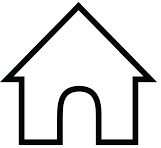

WE HELP REALIZE
YOUR IDEA
Our experience is more than 10 years,
many of our works are created and solve
a problem through interior design
Sitting room
Tayib Family
The minimalist concept is applied Tayid family dining room using Mr. Toyib favorite Black color. Read more